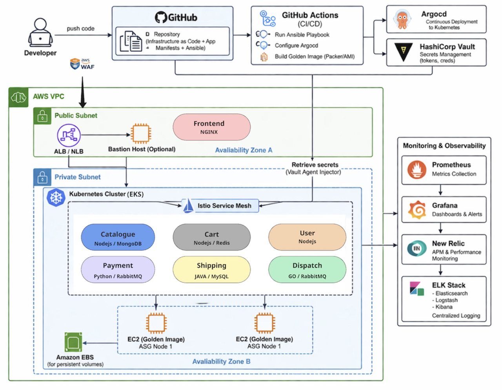
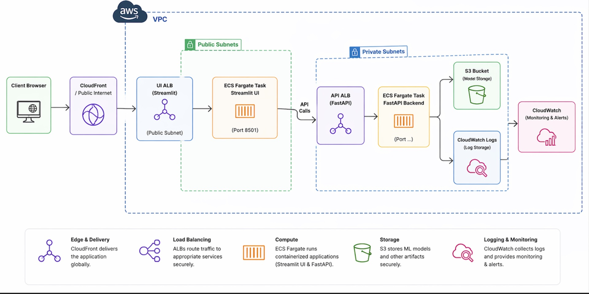
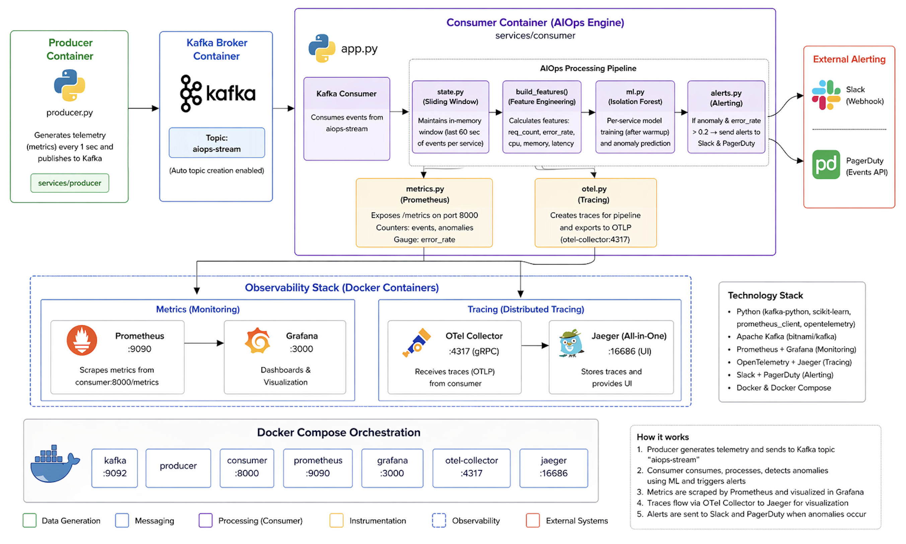

DevSecOps Engineer specializing in cloud-native systems on AWS and Kubernetes, with a focus on CI/CD automation, scalable infrastructure, and production-grade MLOps and AIOps platforms.
DevSecOps Engineer specializing in AWS, Kubernetes, and cloud-native platform engineering. I build secure, scalable, and automated infrastructure for production systems.
I design and implement end-to-end CI/CD pipelines, observability systems, and production-grade automation across DevSecOps, MLOps, and AIOps environments.
Passionate about designing self-healing and observable systems that accelerate deployments while enhancing resilience and operational efficiency in production environments.
AWS | EC2 | VPC | EKS | ECR | IAM | Route53 | S3 | WAF | Lambda | KMS | SSM | RDS | ElastiCache | DocumentDB
Jenkins | GitHub Actions | ArgoCD | SonarQube | Sonatype Nexus Repository
Git | GitHub | Vault
Ansible | Terraform | Python | SQL | Bash
Docker | Kubernetes | Helm | Istio
RabbitMQ | Kafka
MySQL | PostgreSQL | MongoDB | Redis
Linux | Windows
Prometheus | Grafana | New Relic | Slack | PagerDuty
ELK Stack | OpenTelemetry | Jaeger
MLflow | Airflow | DVC | PostgreSQL | Kubernetes | KServe |Evidently AI
ML-based Anomaly Detection | Kafka | Observability Data Integration
End-to-end AWS DevSecOps platform for microservices, built using Terraform and Packer for infrastructure provisioning, GitHub Actions for CI/CD, ArgoCD and Helm for GitOps deployments, Istio and Vault for service mesh security, Kubernetes autoscaling (HPA + Cluster Autoscaler), and Prometheus, Grafana, ELK, and New Relic for full observability under load-tested production-like conditions.

GitHub Actions, ArgoCD, Helm automation.
GitHub Actions ArgoCD Helm GitTerraform, Packer AWS EKS provisioning.
Terraform Ansible Docker ECR EKSVault, Istio mTLS, AWS KMS encryption.
Vault Istio IAM KMS Route53Prometheus, Grafana, ELK, New Relic stack.
Prometheus Grafana ELK New RelicEnd-to-end production-grade MLOps pipeline for house price prediction, designed with modular pipelines for feature engineering, training, and inference, integrated with MLflow for experiment tracking and model versioning, containerized using Docker, and deployed on AWS ECS (Fargate) with ECR and S3, with CI/CD automation via GitHub Actions, microservices architecture using FastAPI and Streamlit, and robust testing (pytest) to deliver a scalable, reproducible, and reliable ML system.

Training, validation, preprocessing pipelines using MLflow.
Python MLflow AirflowKubernetes-based ML model deployment with CI/CD.
Docker Kubernetes AWSExperiment tracking & model registry.
MLflow S3 DVC PostgreSQLModel drift and performance monitoring.
Prometheus Grafana Evidently AIA real-time AIOps platform that simulates microservice telemetry, streams data through Kafka, and detects anomalies using machine learning. Built with Python and powered by an observability stack including Prometheus, Grafana, OpenTelemetry, and Jaeger, the system enables real-time monitoring, anomaly detection, and alerting via Slack and PagerDuty.

Metrics, logs, traces unified monitoring system with real-time streaming ingestion.
Prometheus Grafana ELK Apache Kafka OpenTelemetryMachine learning-based detection of infrastructure anomalies from streaming data.
Python Pandas Scikit-learn Isolation ForestAutomated alerting and incident response workflows with real-time notifications.
Kafka Alertmanager Slack PagerDutyCorrelation of logs, metrics, and traces to identify system failures and root causes.
Elasticsearch Kibana Python Jaeger